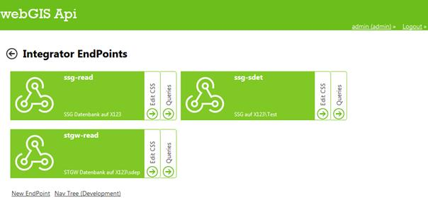
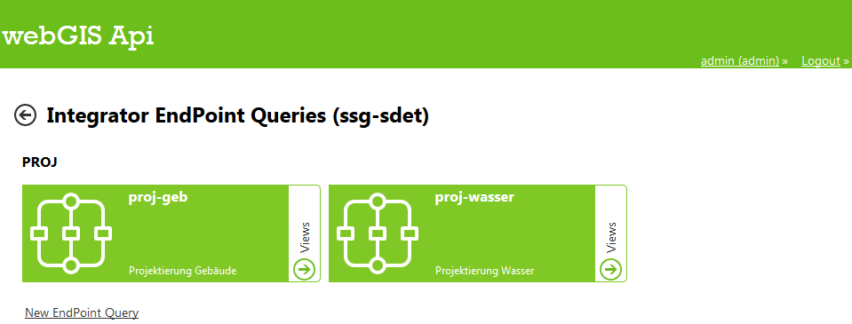
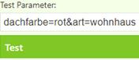
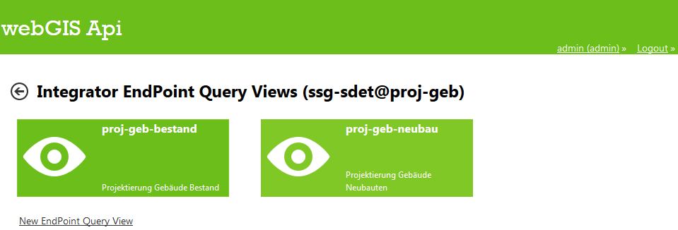
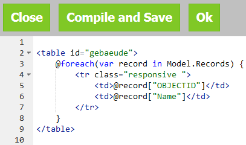
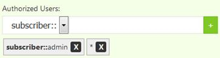

3 Parametrierung¶
3.1 Endpunkte¶
Unter „DataLinq EndPoints“ kann ein neuer Endpunkt erstellt oder bestehende Endpunkte bearbeitet werden.
Mit Klick auf die Schaltfläche „Edit CSS“ kann ein CSS-Dokument erstellt werden, auf dessen Stile von allen – in diesem Endpunkt vorhandenen – Views zugegriffen werden kann (Kapitel 3.5). Durch Klick auf „Queries“ können neue Abfragen für den jeweiligen Endpunkt erstellt werden (Kapitel 3.2).
Mit Klick auf „Nav Tree“ wird links ein Navigationsbaum mit der Struktur der Endpoints, Query und Views angezeigt mithilfe dessen schnell ein Element ausgewählt und bearbeitet werden kann.
Über die Schaltfläche „New Endpoint“ kann in drei Schritten ein neuer Endpunkt erstellt werden:
General
EndPoint Id
Eindeutiger Name des Endpoints, wird bei URL Aufruf verwendet
EndPoint Name
Bezeichnung des Endpunktes
Description
Optional, Beschreibung
Connection
Type
Database: DB-Verbindung, bspw.
SQL:Server=db123.firma.at\instanz;Database=ssg;User Id=user1;Password=pwd1;
Api: ArcGIS Rest Schnittstelle, bspw. http://localhost/test_api5
Falls der Dienst berechtigt ist, können die Zugangsdaten eines berechtigten Subscribers mit
service=http://server123.at/api5test;user=username;pwd=12345
angegeben werden
DataLinq: Eine andere WebGIS DataLinq Anwendung, bspw.
...Plugins, bspw. Wetterdienste, Twitter, etc.
Security
Setzen von autorisierten Usern / Rollen, siehe Kapitel 3.2
3.2 Query (Abfragen)¶
Nach der Auswahl einer Endpoints können für diesen Abfragen erstellt werden. Damit kann der Datenbestand des Endpoints (dort wird die Verbindung zum Datenbestand definiert) abgefragt werden. Je nach Verbindungstyp kann diese Abfrage unterschiedlich formuliert sein. Bei Abfragen auf Datenbanken wird dies in der Regel SQL-Code sein, bei Abfragen auf REST-Schnittstellen wird es eine URL sein.
Unter „New EndPoint Query“ wird eine neue Abfrage erstellt:
General
Query Id
Eindeutiger Name der Abfrage, wird bei URL Aufruf verwendet
Query Name
Bezeichnung des Abfrage
Description
Optional, Beschreibung
Statement (über Editor)
Je nach Verbindungstyp kann diese Abfrage unterschiedlich formuliert sein
Abfrage aus Datenbanken: SQL
Abfrage aus REST-Schnittstellen: URL
Auch Parameter, bspw. zur Einschränkung der Ergebnisse sind möglich
SQL-Parameter: @Parametername
SELECT [OBJECTID], [NAME] FROM projekt_gebaeude WHERE gebaeudeid = @GebaeudeId
REST: {{Parametername}}
URL/gebaeude?gebaeudeid={{GebaeudeId}}&…Bei der REST-Abfrage müssen die Parameter im CMS als Suchbegriff definiert sein.
Optionale Parameter werden nur eingefügt, wenn sie im Aufruf übergeben wurden. Sie können im Query-Statement mit
#if PARAMETERNAME […] #endifdefiniert werden, der Inhalt zwischen diesen beiden Keywords wird dem Statement angehängt.SQL-Parameter: @Parametername
SELECT [NAME], [FARBE] WHERE gebaeudeart = @GebaeudeArt #if dachfarbe AND FARBE = @dachfarbe #endif
REST: {{Parametername}}
URL/gebaeude?gebaeudeart={{GebaeudeArt}} #if dachfarbe &farbe = @dachfarbe #endif
Test Parameter: hier kann die Query mit Parametern getestet werden. Bei Klick auf Test wird die Abfrage-URL erstellt, siehe Kapitel 4.1.

Domains: zum Übersetzen von Werten, siehe Kapitel 5.7
Security
Setzen von autorisierten Usern / Rollen, siehe Kapitel 3.2
3.3 Views (Ansichten)¶
Zur Darstellung der Ergebnisse einer Abfrage können ein oder mehrere Ansichten erstellt werden.
Unter „New EndPoint Query View“ wird eine neue Abfrage erstellt:
General
View Id
Eindeutiger Name der Ansicht, wird bei URL Aufruf verwendet
View Name
Bezeichnung des Ansicht
Description
Optional, Beschreibung
Code (über Editor)
HTML mit ASP.NET Razor Markup
Mit „Compile and Save“ wird der Code kompiliert und gespeichert, bzw. sonst eventuelle Fehlermeldungen ausgegeben.
Im Editor ist unter „Help“ ein Link mit Beispielen zu DataLinqHelper-Funktionen (Kapitel 5.2) finden
3.4 Berechtigung¶
Für Endpunkte und Abfragen können hierarchisch Berechtigungen gesetzt werden. D.h. wer auf einen Endpunkt nicht zugreifen darf, darf auch nicht dessen Abfragen ausführen. Es können einzelne User oder auch Rollen berechtigt werden, Token- und Portalverbund sind ebenfalls möglich.
Dazu ist die Art (User, Rolle, etc.) zu wählen und der Name einzugeben und mit Klick auf das „+“-Symbol bzw. Enter zu bestätigen. Mit „*“ werden uneingeschränkte Berechtigungen gesetzt.
3.5 Stile¶
CSS-Stile können sowohl für einen Endpoint und alle darauf aufbauenden Views definiert werden (siehe Kapitel 3.1) als auch innerhalb eines Views mit HTML <style>-Tags bzw. als Inline style-Attribut.